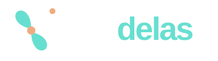

Dados rastreáveis
Cada recurso tem fonte e data de consulta. O diretório Meninas Digitais ajuda a mapear iniciativas locais; recursos nacionais ampliam os caminhos de estudo e competição.

Ceará · BrasilCaminhos para meninas do Ensino Médio no Ceará, com projetos locais e recursos de todo o Brasil. Explore seu interesse e monte uma rota sem criar conta.
Feito para quem está no Ensino Médio e quer conhecer caminhos reais em ciência e tecnologia.
O estado indica a base da iniciativa. O alcance nacional não garante participação remota. Consulte o público, o formato e o regulamento.
Tente outra palavra ou limpe os filtros.
Escolha uma área e ajuste sua rota. Cada indicação explica como combina com suas escolhas.
Sem nome, idade, foto ou cadastro. Salvar guarda a rota somente neste navegador. O link compartilhado inclui suas escolhas e indicações: confira antes de enviar.
Sua rota aparece aqui depois que você escolhe uma área.
Os favoritos ficam somente no navegador deste aparelho. Limpar os dados do navegador pode apagá-los.
Sugira um projeto, curso ou competição de ciência e tecnologia para revisão da equipe.
Cada recurso tem fonte e data de consulta. O diretório Meninas Digitais ajuda a mapear iniciativas locais; recursos nacionais ampliam os caminhos de estudo e competição.
Estar no catálogo não significa ter inscrições abertas. Consulte datas, custos, público e requisitos na instituição responsável. O levantamento não cobre todas as iniciativas do Brasil.
Sugestões externas chegam pelo GitHub, de forma pública, e só entram após análise. Buscar, montar rotas e guardar favoritos funciona sem criar conta.
Rota Delas é um projeto educacional independente. A presença de uma instituição no catálogo não significa parceria ou aprovação. Baixar catálogo em JSON.
Ative Play ou toque em um parágrafo para escolher de onde começar.
Play inicia; as setas do player voltam ou avançam.